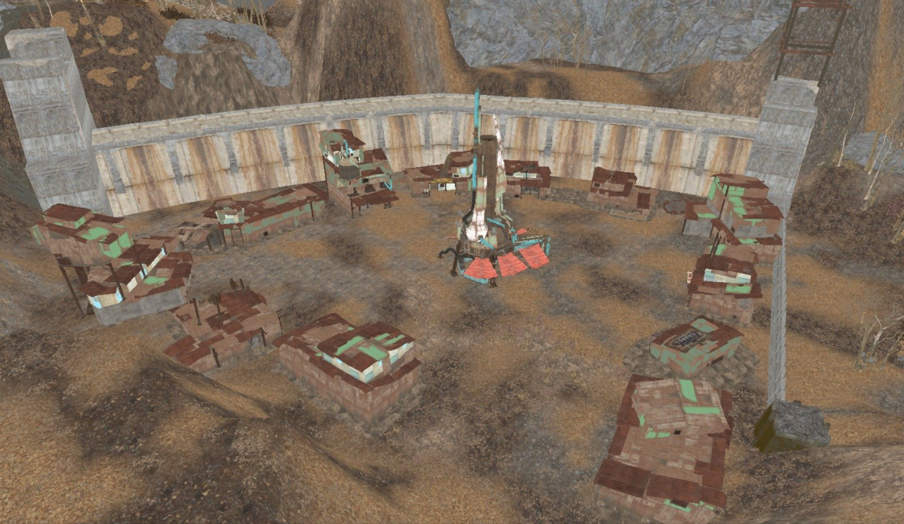
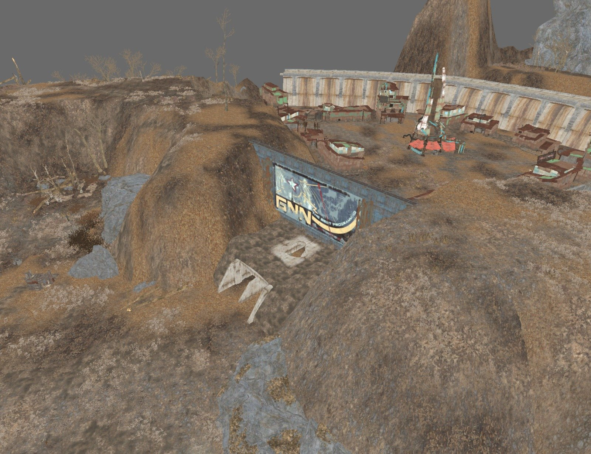
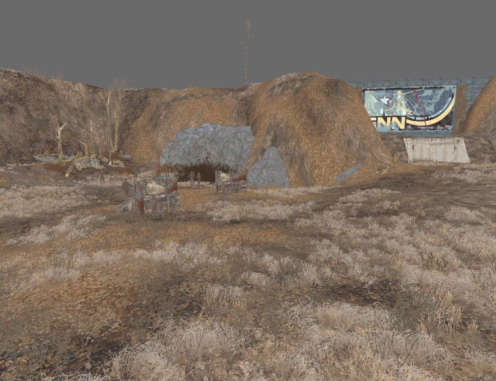
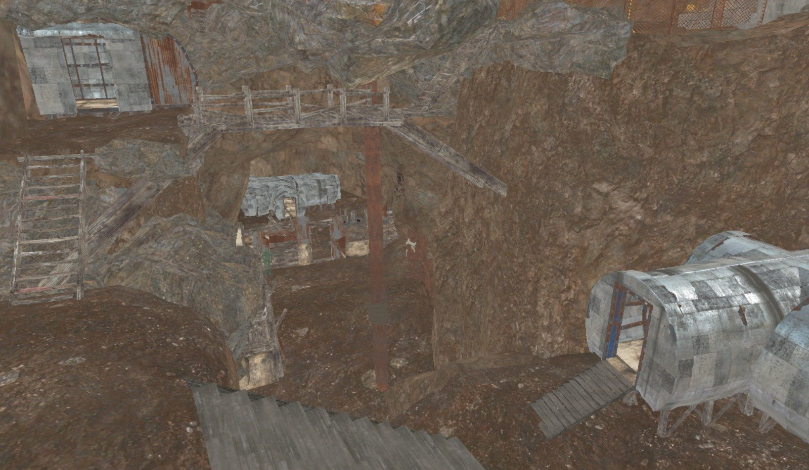
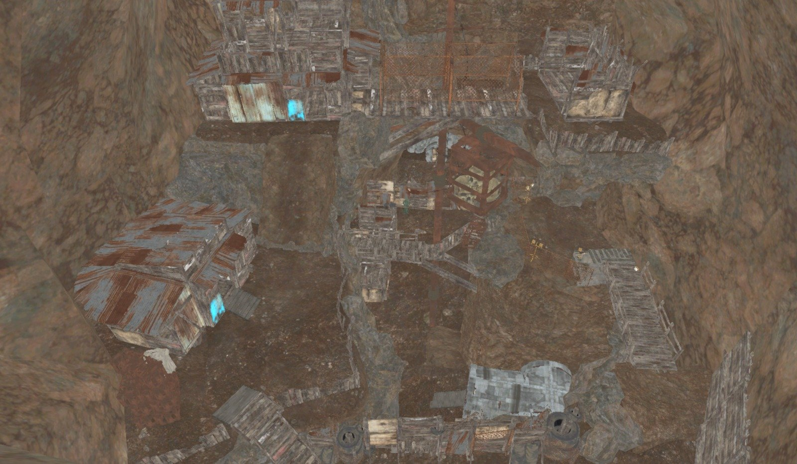
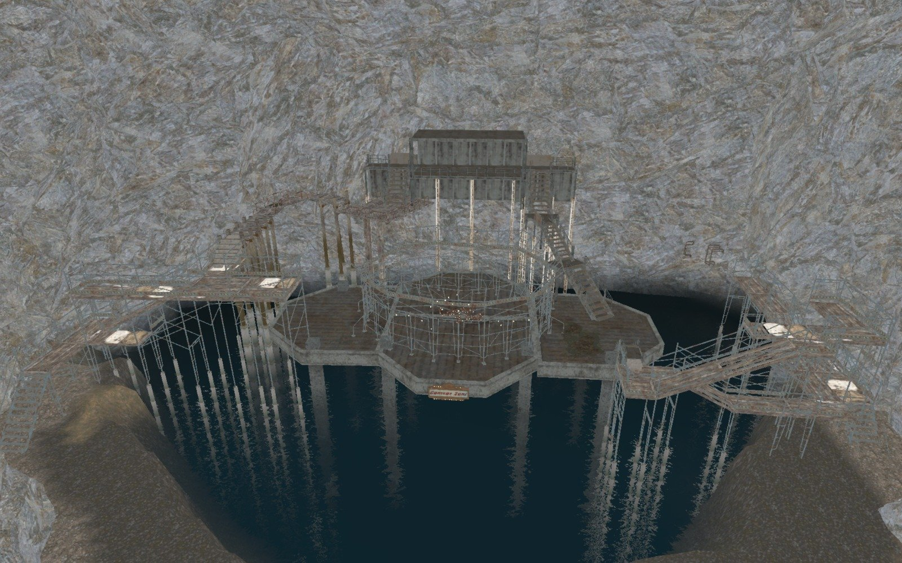
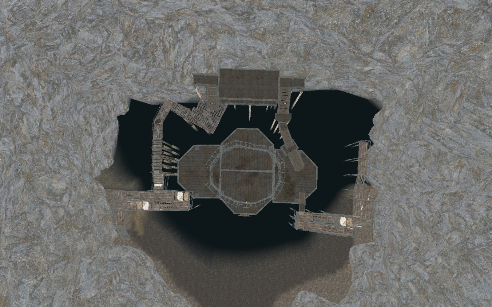
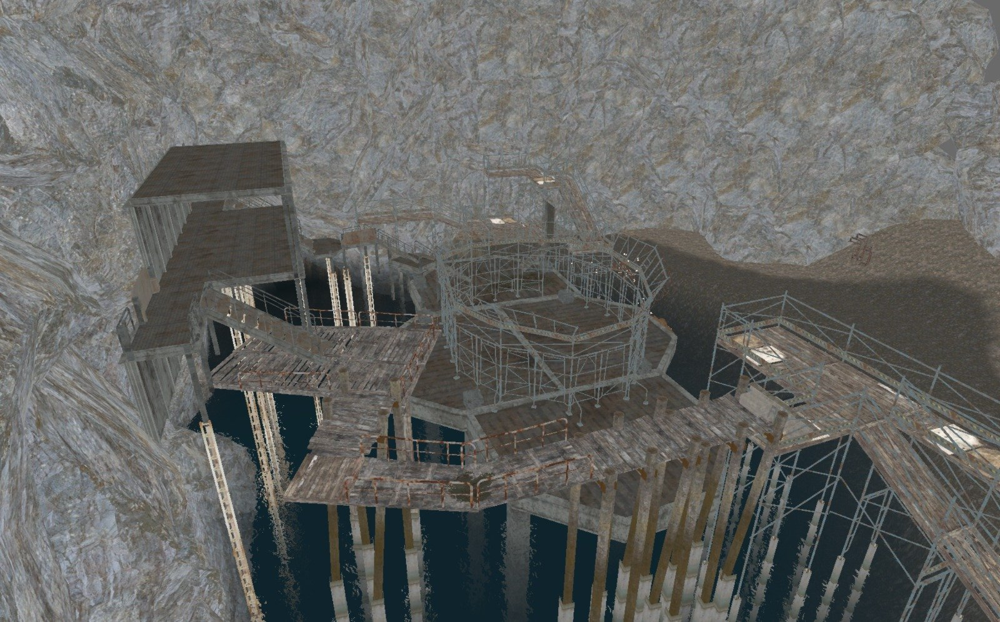

One conflict, three places
A group of raiders has found purified water in a cave beneath their settlement. They settle who controls it the only way they know: in a cage built over the water.
The level is built to carry that story. An open settlement on the surface, a cramped cave town below it, and the arena at its heart. A quest sends the player into the conflict and after a target.
I designed and built the level, scripted the quest in Papyrus, and learned the Creation Kit to do it.
- Role
- Level Designer
- Game
- Fallout 4
- Type
- University project
- Status
- Published, over 2,000 plays
A walled settlement
The surface is open and easy to read. One tall tower marks the centre, and everything else is placed around it.



A settlement inside the cave
Underground the level turns vertical. Stairs, ladders and bridges link huts on different heights.


A cage over the water
This is where the raiders fight, in a cage above the purified water, to decide who controls it. The platform stands on pillars and is reached by walkways and stairs from both sides.



All pictures are views from the editor.